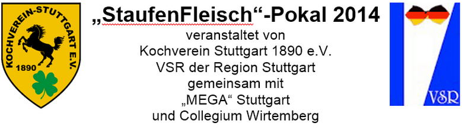
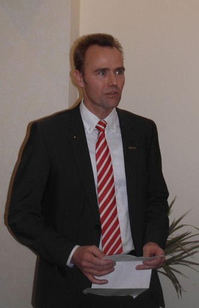
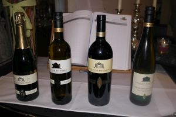

Am 28. Februar startete im IB am Wallgraben in Stuttgart zum ersten Male der Wettbewerb

Herr Klaiber von der MEGA Stuttgart begrüßte bei der Preisverleihung die Gäste zum
ersten "StaufenFleisch-Pokal" in Stuttgart.
Da ihm die Jugend ein Anliegen ist, freut er sich auf den gemeinsamen Wettbewerb und
weiterhin eine lange und gute Zusammenarbeit mit dem Kochverein Stuttgart 1890 e.V.
Die MEGA unterstützt den Wettbewerb und wünscht dem Wettbewerb alles Gute.
Er erläutert kurz den Werdegang des Stauferico-Schweines (näheres auch unten)
und die Genossenschaft MEGA.
Die MEGA hat nicht nur die Lebensmittel zur Verfügung gestellt
sondern dazu auch einheitliche Schürzen für die Azubis.
Nach seiner Ansprache hat er mit unserem 1.Vorsitzenden Michael Viehmann
die Wettbewerbsteilnehmer ausgezeichnet. Er überreichte auch an die drei ersten ein

Herr Kurrle vom Collegium Wirtemberg moderierte die
von Ihm ausgesuchten, passenden Weine zum Essen:
Zur Begrüßung:
2011 Collegium Wirtemberg
Kerner, trocken Sekt
Da schmeckt man, dass man willkommen ist!
Zur Vorspeise:
2012 Edition Wirtemberg
Blanc de Noir, trocken
Ein kräftiger Weißwein aus dem ersten Saft von roten Trauben vergoren.
Zum Hauptgang:
2011 Kult!
Cuvee Wirtemberg
Rotwein Cuvee, Reserve, trocken
Eine prächige Cuvee von Cabernet-Sauvignon,
Cabernet-Dorio, Lemberger die in 225 L Barrique-Eichenholzfässern gelagert
der seinen Geschmack am besten nach dekandieren entfaltet.
Zum Dessert:
2012 Uhlbacher Götzenberg
Kerner, Kabinett
Ein feinsüßer Wein mit 50 Gramm Restsüße und einer starken Frucht.

{kind=link}
{kind=link}
{kind=link}
{kind=link}
{kind=link}
{kind=link}
{kind=link}
{kind=link}
Kochverein Stuttgart 1890 e.V.
im Verband der Köche Deutschlands
Mitglied im Landesverband Baden Württemberg
„StaufenFleisch“-Pokal am 28. Februar 2014 im IB Stuttgart
Die Pflichtbestandteile des Wettbewerbs:
Vorspeise:
Stubenküken
Hauptgang:
Bauch vom Stauferico Schwein
Ochsenschwanz
Dessert:
Ziegenkäse
_______________________________________________________________________________________
1 Kai Heinrich
„Landgasthof Waldhorn“ Auenwald - Däfern
Stubenküken- Wirsinggalantine mit gebratener Stubenkükenbrust, Alblinsensalat, Portulak und Wirsingsäckchen
Warm geliertes Ochsenschwanzragout und geräucherter Schweinebauch mit Pastinake, Rosenkohl und Polenta
Gratinierte Äpfel mit Grapefruit- Ziegenfrischkäsetörtchen und Orangen- Grapefruitsorbet
_________________________________________________________________________________________
2 Louisa Kleinert
„Gasthof Linde“ Oberboihingen
Stubenkükengalantine auf warmen Kartoffel- Wirsingsalat mit Rote Beetesugo
Ochsenschwanzravioli und Stauferico Schweinebauch auf winterlichem Rübenragout mit Pastinakenpüree
Warmer Ziegenfrischkäse- Apfelflan mit Pink Grapefruitsalat, Mandel- und Schokoladensauce
_________________________________________________________________________________________
3 Maik Scholl
„Speisemeisterei“ Stuttgart
Stubenküken im Wirsingblatt mit Rotweinbutter und Sellerie
Orangen- Schweinebauch mit Ochsenschwanzragout und Pastinakenpüree
Ziegenkäsekuchen mit karamellisierten Äpfeln und Grapefruit Gel
_________________________________________________________________________________________
4 Steffen Helwig
„Widmann`s Löwen“ Königsbronn - Zang
„Variation vom Stubenküken“
Stubenkükenkraft, gebratene Brust, geräucherte Roulade, mariniertem Wirsing und Karottencurrygelee
Glasierter Schweinebauch und Gefüllter Ochsenschwanz, Schalottenportweinglace mit Pastinakenpüree, Petersilie, Rote Bete Streifen dazu Maisgrieß
2 Cremes vom Ziegenkäse mit Apfelsorbet und Mandel Grapefruit
_________________________________________________________________________________________
5 Cem Eksi
„Hotel Bareiss“ Baiersbronn
Terrine vom Stubenküken im Wirsingmantel mit Rote Bete und Schalottenvinaigrette
Ochsenschwanzpraline und konfierter Schweinebauch mit Wurzelgemüse und Petersilenwurzelpüree
Ziegenfrischkäsemousse mit geschmortem Jonagold Apfel und Pink Grapefruitcreme
_________________________________________________________________________________________
6 Tim Bredow
„Landgasthof Waldhorn“ Auenwald - Däfern
"2erlei vom Stubenküken" im Wirsingmantel und konfierte Keule mit Feldsalatbouquet in Linsen
Portulak- Vinaigrette
Geschmorter Ochsenschwanz und karamellisierter Schweinebauch an gezupfte Rosenkohlblättern und Rote Bete mit Pastinaken- Kartoffelpüree
Crème Brulée vom Ziegenkäse und Basilikum an Zitrusfrüchtesalat, Apfel- Grapefruitsorbet und Sesam Gebäck
_________________________________________________________________________________________
7 Sophia Iliadis
„ Weinstube Schellenturm“ Stuttgart
Galantine vom Stubenküken mit einem Alblinsenconfit und Rosenkohlsalat
Geschmorter Ochsenschwanz mit gebratenem Schweinebauch, Pastinakenpüree, glasierte Rote Bete und Kartoffelplätzchen
Crème vom Ziegenfrischkäse, Grapefruitsorbet und flambierten Apfelperlen
_________________________________________________________________________________________
8 Robert Stauder
„Speisemeisterei“ Stuttgart
Stubenkükengalantine mit Linsensalat
Gebratener Schweinebauch mit Ochsenschwanzragout, Pastinakenpüree und Risoleekartoffeln
Ziegenkäseparfait mit karamellisierten Äpfeln und Grapefruit
_________________________________________________________________________________________
Vielen Dank an die jungen Köche für die Bereitschaft am StaufenFleisch Pokal teilzunehmen.
Vielen Dank an die Ausbilder für die Bereitschaft ihre Auszubildenden mit Rat und Zeit
zu unterstützen.
Vielen Dank an die Jury für ihre Bereitschaft hier mit Herz dabei zu sein.
_________________
Sehr geehrte Gäste,
ein herzliches Willkommen zum 38. Achenbach-Stadtwettbewerb des Kochvereins Stuttgart 1890 e.V.
zum 25 Mal im Team mit dem Verband der Serviermeister,
Restaurant- und Hotelfachkräfte Sektion Stuttgart,
1. Vorstand, Herr Thomas Goerke.
Bei den Teilnehmern von Küche und Service bedanken wir uns für Ihr freiwilliges Engagement.
Vielen Dank an Herrn Rolf Stech als den Verantwortlichen des Hauses IB
für 20 Jahre Unterstützung des Achenbachwettbewerbs, Herrn Stoye als unser Helfer hier in der Küche,
an das gesamte Team des IB für die freundliche Aufnahme und die Mitarbeit für den Wettbewerb zum Nutzen unserer Berufs-Jugend.
Wir bedanken uns bei den Sponsoren für die Unterstützung bei der Stadtmeisterschaft:
MEGA Stuttgart, Herr Klaiber & Herr Köhrer
Obst & Gemüse Wagner Göppingen, Frau & Herr Ladwig
Collegium Wirtemberg, Herrn Kurrle
Umschau- Verlag, Herr Hartrumpf
Friedr. Dick GmbH & Co.Kg, Herr Leuze
Bei Ihnen bedanken wir uns für Ihr Kommen.
Michael Viehmann
1.Vorsitzender
Hans-J.Mackes